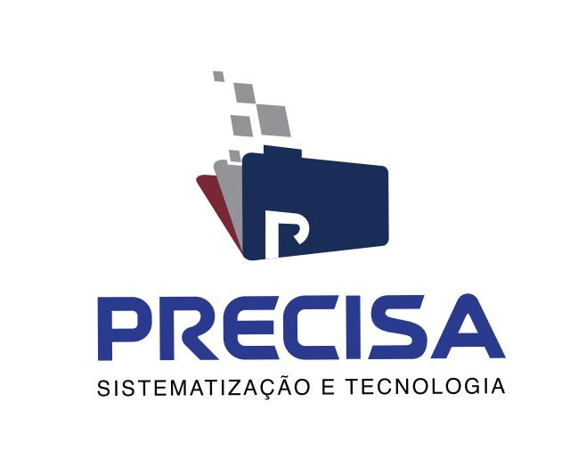

Especialistas em governança da informação, inteligência artificial e transformação digital para o setor público e privado.
Falar com Especialista Conheça Nossas SoluçõesAnos de Experiência
Projetos Executados
Foco em Governança e Conformidade
A Precisa Sistematização & Tecnologia atua desde 1998 desenvolvendo soluções estratégicas em gestão documental, estruturação de dados e inteligência artificial aplicada à governança pública e corporativa.
OCR com IA de alta precisão para tratamento de dados desestruturados.
Validação histórica funcional e prevenção de inconsistências.
Organização física e digital com tabela de temporalidade.
Trabalhamos em conjunto com instituições de referência para entregar as melhores soluções.
Atuação nacional com foco em setor público.
Soluções com Machine Learning e automação inteligente.
Adequação às normas e órgãos de controle.
Entre em contato e fale com nossos especialistas.
Enviar Mensagem